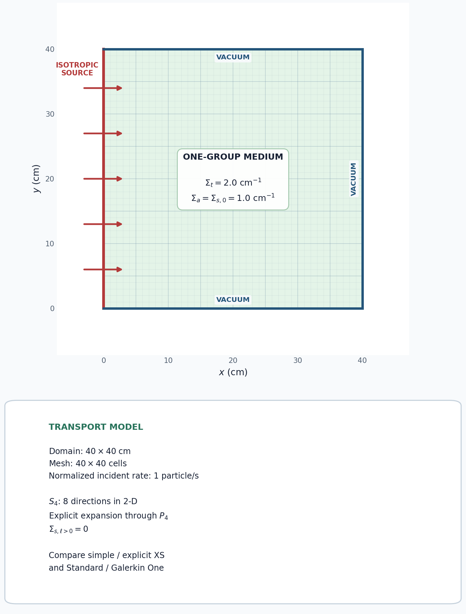

5.1.2. Isotropic Scattering in a P4 Representation

This tutorial verifies that an isotropic scattering cross section gives the same domain-integrated scalar flux when it is supplied through the simple one-group API or an explicit P4 cross-section file. It also compares the standard and Galerkin One angular operators using the same S4 directions.
[ ]:
from pathlib import Path
from mpi4py import MPI
from pyopensn.aquad import GLCProductQuadrature2DXY
from pyopensn.context import Finalize, UseColor
from pyopensn.mesh import OrthogonalMeshGenerator
from pyopensn.post import VolumePostprocessor
from pyopensn.solver import DiscreteOrdinatesProblem, SteadyStateSourceSolver
from pyopensn.xs import MultiGroupXS
UseColor(False)
rank = MPI.COMM_WORLD.rank
5.1.2.1. Define the square and material
The model is a single-material, one-group square with vacuum on every boundary except xmin. The material data are
The explicit file declares a P4 expansion, so it stores moments \(\ell=0,\ldots,4\). An isotropic kernel has \(\Sigma_{s,0}=1.0\) cm\(^{-1}\) and every higher moment equal to zero. Setting the higher moments to 1.0 would instead define an anisotropic, forward-directed kernel.
[ ]:
domain_length = 40.0
num_cells = 40
sigma_t = 2.0
sigma_a = 1.0
sigma_s = sigma_t - sigma_a
nodes = [domain_length * i / num_cells for i in range(num_cells + 1)]
mesh = OrthogonalMeshGenerator(node_sets=[nodes, nodes]).Execute()
mesh.SetUniformBlockID(0)
mesh.SetOrthogonalBoundaries()
xs_filename = Path("isotropic_scattering_p4.xs")
if rank == 0:
with xs_filename.open("w") as stream:
stream.write("NUM_GROUPS 1\n")
stream.write("NUM_MOMENTS 5\n\n")
stream.write("SIGMA_T_BEGIN\n")
stream.write(f"0 {sigma_t}\n")
stream.write("SIGMA_T_END\n\n")
stream.write("TRANSFER_MOMENTS_BEGIN\n")
for ell in range(5):
moment = sigma_s if ell == 0 else 0.0
stream.write(f"M_GFROM_GTO_VAL {ell} 0 0 {moment}\n")
stream.write("TRANSFER_MOMENTS_END\n")
MPI.COMM_WORLD.Barrier()
5.1.2.2. Normalize the incident boundary source
For an isotropic incident angular flux \(\psi_b\), the discrete incoming rate through the 40 cm left boundary (per unit depth) is
We choose \(\psi_b\) so that \(Q_{in}=1\) particle/s. Computing the normalization with the actual S4 weights also makes the normalization independent of a continuous-angle approximation.
[ ]:
normalization_quadrature = GLCProductQuadrature2DXY(
n_polar=4, n_azimuthal=4, scattering_order=4
)
incoming_current = sum(
weight * omega.x
for omega, weight in zip(
normalization_quadrature.omegas, normalization_quadrature.weights
)
if omega.x > 0.0
)
boundary_strength = 1.0 / (domain_length * incoming_current)
source_rate = domain_length * boundary_strength * incoming_current
if rank == 0:
print(f"BOUNDARY_ANGULAR_FLUX={boundary_strength:.12e}")
print(f"BOUNDARY_SOURCE_RATE={source_rate:.12e}")
5.1.2.3. Solve the three representations
All three calculations use the same mesh, S4 directions, P4 angular expansion, source normalization, and solver tolerance. Here S4 is configured with four polar and four azimuthal angles, producing eight directions in 2D. The standard construction retains all 15 two-dimensional moments through P4; Galerkin One selects eight independent P4 harmonics so its moment space is square with the eight directions. The first two cases isolate the cross-section input representation, while the last two isolate the operator construction.
[ ]:
def solve(use_explicit_p4, operator_method):
cross_sections = MultiGroupXS()
if use_explicit_p4:
cross_sections.LoadFromOpenSn(str(xs_filename))
else:
cross_sections.CreateSimpleOneGroup(
sigma_t=sigma_t, c=sigma_s / sigma_t
)
quadrature = GLCProductQuadrature2DXY(
n_polar=4,
n_azimuthal=4,
scattering_order=4,
operator_method=operator_method,
)
problem = DiscreteOrdinatesProblem(
mesh=mesh,
num_groups=1,
groupsets=[{
"groups_from_to": (0, 0),
"angular_quadrature": quadrature,
"inner_linear_method": "petsc_gmres",
"l_abs_tol": 1.0e-10,
"l_max_its": 200,
"gmres_restart_interval": 30,
}],
xs_map=[{"block_ids": [0], "xs": cross_sections}],
boundary_conditions=[
{"name": "xmin", "type": "isotropic",
"group_strength": [boundary_strength]},
{"name": "xmax", "type": "vacuum"},
{"name": "ymin", "type": "vacuum"},
{"name": "ymax", "type": "vacuum"},
],
options={"verbose_inner_iterations": False},
)
solver = SteadyStateSourceSolver(problem=problem)
solver.Initialize()
solver.Execute()
total_flux = VolumePostprocessor(problem=problem, value_type="integral")
total_flux.Execute()
return float(total_flux.GetValue()[0][0]), problem
[ ]:
simple_standard_flux, _ = solve(False, "standard")
p4_standard_flux, _ = solve(True, "standard")
p4_galerkin_one_flux, p4_galerkin_one_problem = solve(
True, "galerkin_one"
)
results = {
"Simple XS, standard": simple_standard_flux,
"Explicit P4 XS, standard": p4_standard_flux,
"Explicit P4 XS, Galerkin One": p4_galerkin_one_flux,
}
reference_flux = results["Simple XS, standard"]
relative_differences = {
label: abs(value - reference_flux) / abs(reference_flux)
for label, value in results.items()
}
if rank == 0:
print(f"{'Case':<34} {'Total flux':>18} {'Relative difference':>22}")
print("-" * 76)
for label, value in results.items():
print(f"{label:<34} {value:>18.10e} "
f"{relative_differences[label]:>22.10e}")
print(f"SIMPLE_STANDARD_TOTAL_FLUX={results['Simple XS, standard']:.12e}")
print(f"P4_STANDARD_TOTAL_FLUX={results['Explicit P4 XS, standard']:.12e}")
print(f"P4_GALERKIN_ONE_TOTAL_FLUX={results['Explicit P4 XS, Galerkin One']:.12e}")
print(f"MAX_RELATIVE_DIFFERENCE={max(relative_differences.values()):.12e}")
5.1.2.4. Interpret the comparison
Case |
Domain-integrated flux |
Relative difference |
|---|---|---|
Simple XS, standard |
0.8376632321 |
0 |
Explicit XS, standard |
0.8376632321 |
0 |
Explicit XS, Galerkin One |
0.8376632321 |
\(5.9\times10^{-14}\) |
The domain-integrated scalar flux is \(\int_V\phi(\mathbf r)\,dV\) per unit depth. Agreement between the first two cases confirms that zero-valued higher scattering moments do not change an isotropic material. Agreement between the last two confirms that the standard and Galerkin One operators preserve this response for the selected S4/P4 calculation.
5.1.2.5. Export and visualize the scalar flux
The three scalar-flux solutions agree, so the Galerkin One result is the representative field. The following code was run once to export it. It remains in Markdown so regression tests do not recreate the VTK files.
from pyopensn.fieldfunc import FieldFunctionGridBased
scalar_flux = p4_galerkin_one_problem.GetScalarFluxFieldFunction()[0]
FieldFunctionGridBased.ExportMultipleToPVTU(
[scalar_flux], "Flux/IsotropicScatteringP4"
)
[ ]:
if rank == 0:
xs_filename.unlink(missing_ok=True)
5.1.2.6. Finalize (for Jupyter Notebook only)
In script mode, PyOpenSn handles finalization automatically. In a Jupyter kernel, finalize OpenSn before MPI.
[ ]:
if "opensn_console" not in globals():
from IPython import get_ipython
if get_ipython() is not None:
Finalize()
MPI.Finalize()